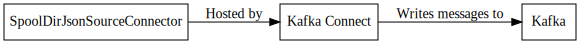

Json Source Connector¶
This connector is used to stream <https://en.wikipedia.org/wiki/JSON_Streaming> JSON files from a directory while converting the data based on the schema supplied in the configuration.
Configuration¶
File System¶
error.path¶
The directory to place files in which have error(s). This directory must exist and be writable by the user running Kafka Connect.
Importance: High
Type: String
input.file.pattern¶
Regular expression to check input file names against. This expression must match the entire filename. The equivalent of Matcher.matches().
Importance: High
Type: String
input.path¶
The directory to read files that will be processed. This directory must exist and be writable by the user running Kafka Connect.
Importance: High
Type: String
finished.path¶
The directory to place files that have been successfully processed. This directory must exist and be writable by the user running Kafka Connect.
Importance: High
Type: String
halt.on.error¶
Should the task halt when it encounters an error or continue to the next file.
Importance: High
Type: Boolean
Default Value: true
cleanup.policy¶
Determines how the connector should cleanup the files that have been successfully processed. NONE leaves the files in place which could cause them to be reprocessed if the connector is restarted. DELETE removes the file from the filesystem. MOVE will move the file to a finished directory.
Importance: Medium
Type: String
Default Value: MOVE
Validator: ValidEnum{enum=CleanupPolicy, allowed=[NONE, DELETE, MOVE]}
file.minimum.age.ms¶
The amount of time in milliseconds after the file was last written to before the file can be processed.
Importance: Low
Type: Long
Default Value: 0
Validator: [0,…]
processing.file.extension¶
Before a file is processed, it is renamed to indicate that it is currently being processed. This setting is appended to the end of the file.
Importance: Low
Type: String
Default Value: .PROCESSING
Validator: ValidPattern{pattern=^.*..+$}
Schema¶
Schema Generation¶
schema.generation.enabled¶
Flag to determine if schemas should be dynamically generated. If set to true, key.schema and value.schema can be omitted, but schema.generation.key.name and schema.generation.value.name must be set.
Importance: Medium
Type: Boolean
Default Value: false
schema.generation.key.fields¶
The field(s) to use to build a key schema. This is only used during schema generation.
Importance: Medium
Type: List
Default Value: []
schema.generation.key.name¶
The name of the generated key schema.
Importance: Medium
Type: String
Default Value: com.github.jcustenborder.kafka.connect.model.Key
schema.generation.value.name¶
The name of the generated value schema.
Importance: Medium
Type: String
Default Value: com.github.jcustenborder.kafka.connect.model.Value
Timestamps¶
timestamp.field¶
The field in the value schema that will contain the parsed timestamp for the record. This field cannot be marked as optional and must be a [Timestamp](https://kafka.apache.org/0102/javadoc/org/apache/kafka/connect/data/Schema.html)
Importance: Medium
Type: String
timestamp.mode¶
Determines how the connector will set the timestamp for the [ConnectRecord](https://kafka.apache.org/0102/javadoc/org/apache/kafka/connect/connector/ConnectRecord.html#timestamp()). If set to Field then the timestamp will be read from a field in the value. This field cannot be optional and must be a [Timestamp](https://kafka.apache.org/0102/javadoc/org/apache/kafka/connect/data/Schema.html). Specify the field in timestamp.field. If set to FILE_TIME then the last modified time of the file will be used. If set to PROCESS_TIME the time the record is read will be used.
Importance: Medium
Type: String
Default Value: PROCESS_TIME
Validator: ValidEnum{enum=TimestampMode, allowed=[FIELD, FILE_TIME, PROCESS_TIME]}
parser.timestamp.date.formats¶
The date formats that are expected in the file. This is a list of strings that will be used to parse the date fields in order. The most accurate date format should be the first in the list. Take a look at the Java documentation for more info. https://docs.oracle.com/javase/6/docs/api/java/text/SimpleDateFormat.html
Importance: Low
Type: List
Default Value: [yyyy-MM-dd’T’HH:mm:ss, yyyy-MM-dd’ ‘HH:mm:ss]
parser.timestamp.timezone¶
The timezone that all of the dates will be parsed with.
Importance: Low
Type: String
Default Value: UTC
General¶
batch.size¶
The number of records that should be returned with each batch.
Importance: Low
Type: Int
Default Value: 1000
empty.poll.wait.ms¶
The amount of time to wait if a poll returns an empty list of records.
Importance: Low
Type: Long
Default Value: 250
Validator: [1,…,9223372036854775807]
Examples¶
Json¶
This example will read json from the input directory.
Select one of the following configuration methods based on how you have deployed Kafka Connect. Distributed Mode will the the JSON / REST examples. Standalone mode will use the properties based example.
Distributed Mode Json
{
"name" : "spoolDirJsonSourceConnector1",
"config" : {
"connector.class" : "com.github.jcustenborder.kafka.connect.spooldir.SpoolDirJsonSourceConnector",
"tasks.max" : "1",
"finished.path" : "/tmp",
"input.path" : "/tmp",
"error.path" : "/tmp",
"input.file.pattern" : "^users\\d+\\.json$",
"topic" : "users"
}
}
Standalone Mode Properties
#
#Wed May 02 23:05:08 UTC 2018
connector.class=com.github.jcustenborder.kafka.connect.spooldir.SpoolDirJsonSourceConnector
topic=users
input.file.pattern=^users\\d+\\.json$
error.path=/tmp
input.path=/tmp
tasks.max=1
finished.path=/tmp